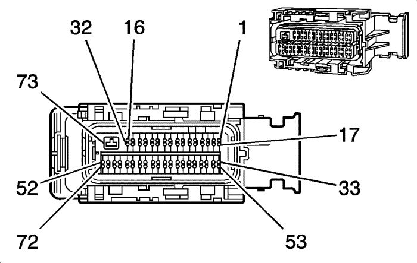

Captiva |
||||||||
|
|
|
|||||||
|
 |
Información de parte de conector
| Información de parte de terminal
|
Bulón | Tamaño | Color | Circuito | Función | Opción |
|---|---|---|---|---|---|
1-2 | -- | -- | -- | No disponible | -- |
3 | 0,5 | BK/D-BU | 808 | Referencia baja del sensor | -- |
4-9 | -- | -- | -- | No disponible | -- |
10 | 0,5 | VT/GY | 3110 | Señal alta del sensor de oxígeno calentado, banco 1, sensor (1) | -- |
11 | 0,5 | VT/WH | 3210 | Señal alta del sensor de oxígeno calentado, bancada 2, sensor (1) | -- |
12 | 0,5 | VT/D-BU | 3120 | Señal alta del sensor de oxígeno calentado, banco 1, sensor (2) | -- |
13 | 0,5 | VT/D-GN | 3220 | Señal alta del sensor de oxígeno calentado, banco 2, sensor (2) | -- |
14-15 | -- | -- | -- | No disponible | -- |
16 | 0,5 | BN/WH | 582 | Control del actuador de la mariposa cerrado | -- |
17 | -- | -- | -- | No disponible | -- |
18 | 0,5 | GY/RD | 598 | Referencia 1 de 5 voltios | -- |
19 | 0,5 | D-BU/WH | 2918 | Señal de sensor de presión de tubo de distribución de combustible | -- |
20-25 | -- | -- | -- | No disponible | -- |
26 | 0,5 | WH/BK | 3111 | Señal baja del sensor de oxígeno calentado, banco 1, sensor (1) | -- |
27 | 0,5 | YE/WH | 3211 | Señal baja del sensor de oxígeno calentado, bancada 2, sensor (1) | -- |
28 | 0,5 | WH/YE | 3121 | Señal baja del sensor de oxígeno calentado, banco 1, sensor (2) | -- |
29 | 0,5 | YE/D-BU | 3221 | Señal baja del sensor de oxígeno calentado, banco 2, sensor (2) | -- |
30-31 | -- | -- | -- | No disponible | -- |
32 | 0,5 | YE | 581 | Control del actuador de la mariposa abierto | -- |
33 | 0,5 | BN/D-GN | 485 | Señal del sensor de posición del acelerador (1) | -- |
34 | 0,5 | BN/RD | 2701 | Referencia de 5 voltios del sensor de posición del acelerador 4 | -- |
35 | 0,5 | BN/D-BU | 486 | Señal del sensor de posición del acelerador (2) | -- |
36 | 0,5 | VT/GY | 496 | Señal del sensor de picado (1) | -- |
37 | 0,5 | WH/GY | 1876 | Señal del sensor de picado (2) | -- |
38-40 | -- | -- | -- | No disponible | -- |
41 | 0,5 | GY/WH | 3113 | Control bajo del calentador del sensor de oxígeno calentado, banco 1, sensor (1) | -- |
42 | 0,5 | GY/WH | 3122 | Control bajo del calentador del sensor de oxígeno calentado, banco 1, sensor (2) | -- |
43 | 0,5 | D-GN/WH | 432 | Señal del sensor de presión absoluta del colector | -- |
44 | 0,5 | GY/RD | 2704 | Referencia de 5 voltios del sensor de presión absoluta del colector 3 | -- |
45-48 | -- | -- | -- | No disponible | -- |
49 | 0,5 | WH/D-BU | 6289 | Señal del sensor de temperatura del aire de inducción | -- |
50 | -- | -- | -- | No disponible | -- |
51 | 0,5 | D-GN/D-BU | 428 | Control de solenoide de purga de cartucho de EVAP | -- |
52 | 0,5 | D-GN/WH | 492 | Señal del sensor de flujo de masa de aire | -- |
53 | 0,5 | BN | 25 | Control del indicador de carga | -- |
54 | 0,5 | BK/BN | 2752 | Referencia baja de sensor de posición de mariposa | -- |
55 | 0,5 | GY | 23 | Señal de ciclo de servicio inductor del generador | -- |
56 | 0,5 | BK/YE | 1716 | Referencia baja del sensor de picado (1) | -- |
57 | 0,5 | BK/GY | 2303 | Referencia baja del sensor de picado (2) | -- |
58 | 0,5 | WH/GY | 1786 | Señal de estacionamiento/punto muerto de la transmisión (1) | -- |
59-60 | -- | -- | -- | No disponible | -- |
61 | 0,5 | D-GN/YE | 3212 | Control bajo del calentador del sensor de oxígeno calentado, bancada 2, sensor (1) | -- |
62 | 0,5 | WH/BN | 3223 | Control bajo del calentador del sensor de oxígeno calentado, bancada 2, sensor (2) | -- |
63 | 0,5 | BK/D-GN | 469 | Referencia baja del sensor de presión absoluta del colector | -- |
64-68 | -- | -- | -- | No disponible | -- |
69 | 0,5 | BK/VT | 2760 | Referencia baja del sensor de temperatura del aire de entrada | -- |
70-72 | -- | -- | -- | No disponible | -- |
73 | 1.5 | BK/WH | 451 | Masa de la señal | -- |
| © Copyright Chevrolet Europe. All rights reserved |